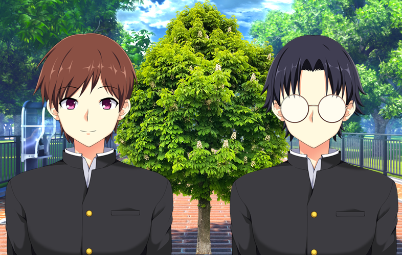

description
"my plant study time" was my entry for Jame Gam 46 with theme of "tied together" and special object "plant". since it was a beginner friendly jam i decided to re-learn renpy basics for it, and keep my entry light and stupid
credits
- backgrounds by Uncle Mugen on lemmasoft forums
- male sprite by sutemo on itch
- tree graphic by Onsemeliot on openGameArt
- forest photo by eddyvanduijn on unsplash
- music by JDShebert on itch
- forest ambience by Spring Spring on openGameArt
- teacher sprite by Zaph Dev on itch
reviews
- Cute and educational! nice job :)
- Never change peb! I like your small games fully soaked with idea/intention
- Never change steven-kun